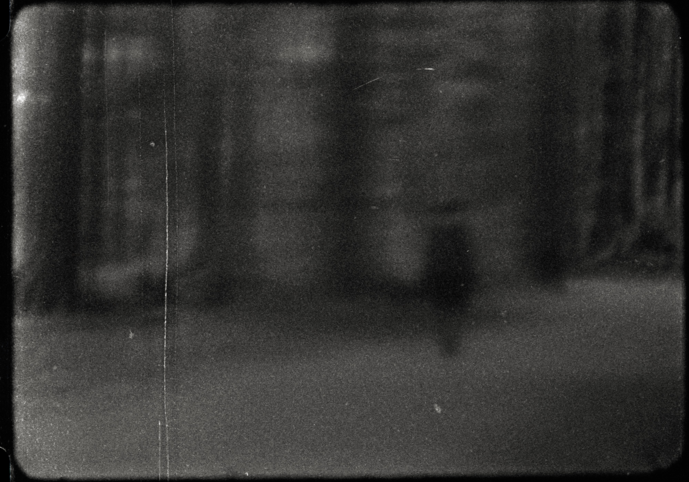
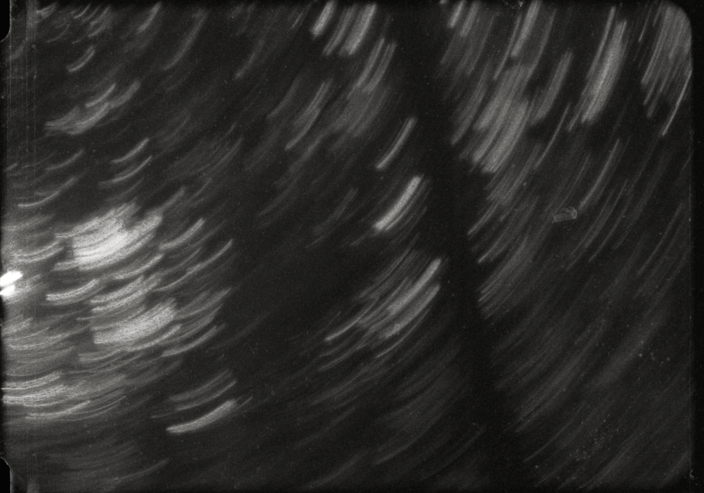
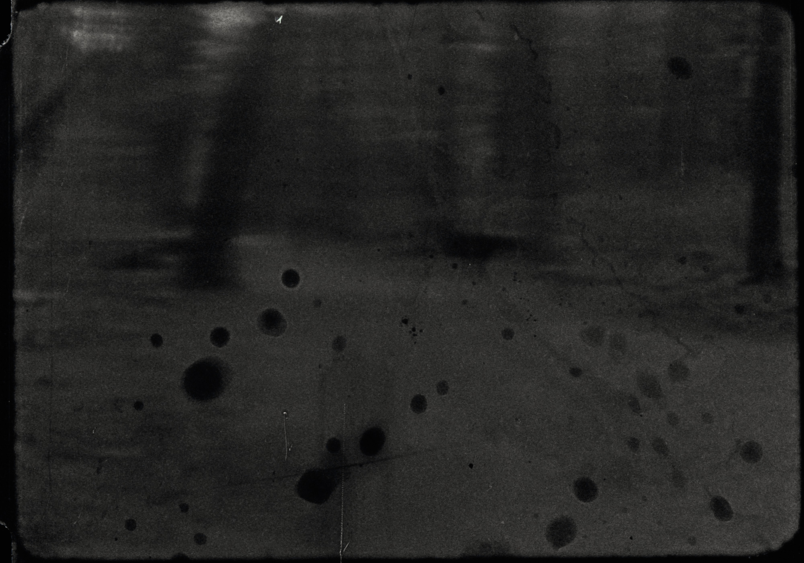

i see me watching speculates on the journey to and struggle with finding identity by presenting a first-person depiction of a singular self that has been split into two. The film displays the character's ever-changing emotions as they follow an anonymous figure through unfamiliar surroundings, and gain awareness of the figure as an integral part of their being. Writer and Director: Sidney Gordon Composer: Aysha Dulong Cinematographer: Emil Vargas 1st Assistant Director: Lauren Olson 2nd Assistant Director and Spotter: Kaïa Barthe-Lessard 1st Assistant Camera: Warren Tang Grips: Pablo Garcia Garcia, Liao Yi Figure: Taliesin Mason-McCrea Production Assistant: Celina de Leon Stills Photographers: Vanessa Denham, Enid Huang Costume Assistant: Tillie Roy Sound Mix: Matt Stephanson Scanning: Film House Special Thanks: Lindsay McIntyre Harry Killas Brittney Appleby Madeleine Keen *password protected video available upon request
  Screenings: 2022 - Best of Animation + Film/Video Showcase, Reliance Theatre, ECU, Vancouver BC 2022 - SPARKING: An Emily Carr Film and Screen Arts Graduate Showcase, Pacific Cinematheque, Vancouver BC Awards: 2022 - Chancellors Jury Award, Winner, i see me watching, Emily Carr University of Art + Design 2022 - VIVO Distribution Award, Winner, i see me watching 2022 - Best Experimental, Winner, i see me watching, Emily Carr University of Art + Design